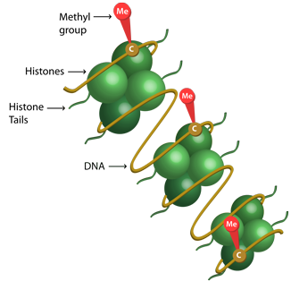

|
Research
See Google Scholar for all my publications. *: corresponding authors.
Machine learning and high-dimensional inference
We develop new algorithms and theories for machine learning methods (penalized regression and clustering) and high-dimensional inference. We further apply them to genetic and genomic datasets.
|
|
He, Y., Xu, G., Wu, C., and Pan, W. (2021)
Asymptotically Independent U-Statistics in High-Dimensional Testing. Annals of Statistics, 49(1), 154-181.
Wu, C.*, Xu, G., Shen, X., and Pan, W.* (2020)
A regularization-based adaptive test for high-dimensional generalized linear models. Journal of Machine Learning Research, 21(128), 1-67.
(This paper won the 2019 ENAR Distinguished Student Paper Award)
Wu, C.*, Xu, G., and Pan, W.* (2019).
An adaptive test on high dimensional parameters in generalized linear models. Statistica Sinica, 29(4), 2163-2186.
Liu, B., Wu, C., Shen, X., and Pan, W. (2017).
A novel and efficient algorithm for de novo discovery of mutated driver pathways. Annals of Applied Statistics, 17(3):1481–1512.
Wu, C.#, Kwon, S.#, Shen X., and Pan W. (2016) (#: equal contribution)
A New Algorithm and Theory for Penalized Regression-based Clustering. Journal of Machine Learning Research, 17, 1-25
|
Related software:
prclust: Penalized Regression-Based Clustering Method;
aispu: adaptive interaction sum of powered score (aiSPU) test for testing high-dimensional parameters under generalized linear models (GLMs) with high-dimensional nuisance parameters.
GLMaSPU: An adaptive test for testing high-dimensional parameters under generalized linear models (GLMs) with low-dimensional nuisance parameters.
Statistical Genetics/Genomics
Integrative analysis of GWAS and multi-omics data
Transcriptome-wide association studies (TWAS) integrate expression
quantitative trait loci (eQTL) data with disease genome-wide association study (GWAS) results to discover gene-trait associations. TWAS has garnered substantial interest and has been used widely to identify many novel trait-associated genes. Following TWAS, we propose several novel methods in this field to integrate gene expression, enhancer-promoter interactions, and brain imaging with GWAS results.
|
|
Wu, C.*, & Pan, W.* (2020).
A powerful fine-mapping method for transcriptome-wide association studies. Human Genetics, 139(2), 199-213.
Yang, T., Wu, C., Wei, P., & Pan, W. (2020). Integrating DNA sequencing and transcriptomic data for association analyses of low-frequency variants and lipid traits. Human Molecular Genetics, 29(3), 515-526.
Wu, C. and Pan, W. (2018).
Integration of enhancer-promoter interactions with GWAS summary results identifies novel schizophrenia-associated genes and pathways. Genetics, 209(3), 699-709.
Wu, C. and Pan, W. (2018).
Integrating eQTL data with GWAS summary statistics in pathway-based analysis. Genetic Epidemiology, 42(3), 303-316.
(This paper won a poster talk at ASHG 2017 Annual Meeting.)
Xu, Z., Wu, C., Wei, P., and Pan, W. (2017).
A powerful framework for integrating eQTL and GWAS summary data. Genetics, 207(3), 893-902.
Xu, Z., Wu, C., Pan, W., and Alzheimer's Disease Neuroimaging Initiative (ADNI). (2017).
Imaging-wide association study: integrating imaging endophenotypes in GWAS. NeuroImage, 159:159–169.
(This is paper won a platform presentation at the American Society of Human Genetics (ASHG) 2017 Annual Meeting)
|
Related software:
IWAS: Imaging-Wide Association Study;
TWAS-aSPU: Integrating eQTL and GWAS data;
aSPUpath2: Integrating eQTL data with GWAS summary statistics in pathway-based analysis.
FOGS: FOGS is a powerful fine-mapping method that prioritizes putative causal genes by accounting for local LD in TWAS results
DNA methylation data integration
DNA methylation is a widely studied epigenetic mechanism. The Athero-sclerosis Risk in Communities (ARIC) study measures DNA methylation over 480,000 methylation markers obtained from about 3,000 subjects. I develop new methods to solve challenges arising from the ARIC DNA methylation data.
|
 |
Wu, C.*, Bradley J., Li, Y., Wu, L., and Deng, HW. (2021).
A gene-level methylome-wide association analysis identifies novel Alzheimer's disease genes. Bioinformatics.
Wu, C.*, & Pan, W.* (2019).
Integration of methylation QTL and enhancer–target gene maps with schizophrenia GWAS summary results identifies novel genes. Bioinformatics, 35(19), 3576-3583.
Wu, C., Demerath, E. W., Pankow, J. S., Bressler, J., Fornage, M., Grove, M. L., Chen, W., and Guan, W. (2016).
IImputation of missing covariate values in epigenome-wide analysis of DNA methylation data. Epigenetics, 11(2):132–139.
Bose, M., Wu, C., Pankow, J. S., Demerath, E. W., Bressler, J., Fornage, M., Grove, M. L., Mosley, T. H., Hicks, C., North, K., Kao, W. H., Zhang, Y., Boerwinkle, E., and Guan, W. (2014).
Evaluation of microarray-based DNA methylation measurement using technical replicates: the Atherosclerosis Risk In Communities (ARIC) Study. BMC Bioinformatics, 15(1):1–10.
|
Human microbiome data analysis
A human body has more than ten times as many microbes living in it as cells. These microorganisms play an important part in our overall health, such as protecting us from diseases and digesting food. We develop new methods to test an association of human microbiome diversity with a trait of interest.
 |
Wu, C., Chen, J., Kim, J., and Pan, W. (2016).
An adaptive association test for microbiome data. Genome Medicine, 8(1):1–12.
(This paper won the 2016 Joint Statistical Meetings (JSM) Distinguished Student Paper Award on Statistics in Genomics and Genetics Section.)
|
Applied studies
|
|
Wu, C.*, Wu, L., Wang, J., Lin, L., Li, Y., Lu, Q., & Deng, H. W. (2021).
Systematic identification of risk factors and drug repurposing options for Alzheimer's disease. Alzheimer's & Dementia, 7(1), e12148.
Wu, C.*, Zhu, J., King, A., Tong, X., Lu, Q., Park, J. Y., … & Wu, L.* (2021).
Novel strategy for disease risk prediction incorporating predicted gene expression and DNA methylation data: a multi-phased study of prostate cancer. Cancer Communications, 1-11.
Wu, L.*, Zhu, J., Liu, D., Sun, Y., & Wu, C.* (2021).
An integrative multiomics analysis identifies putative causal genes for COVID-19 severity. Genetics in Medicine, 1-11.
|
Other works
Wu, C. (2020) Multi-trait genome-wide analyses of the brain imaging phenotypes in UK Biobank. Genetics, 215(4), 947-958.
(Highlight in Genetics August issue; presented as a platform presentation at ASHG 2019 Annual Meeting)
Xue, H., Wu, C., & Pan, W. (2020). Leveraging existing GWAS summary data of genetically correlated and uncorrelated traits to improve power for a new GWAS. Genetic Epidemiology, 44(7), 717-732.
Park, J.Y., Wu, C., Basu, S., McGue, M., and Pan, W. (2018). Adaptive SNP set association
testing in generalized linear mixed models with application to family studies. Behavior Genetics, 48(1):55–66.
Collaborative research
I am involved in many applied studies and enjoy collaborative research. Specifically, I have collaborated with epidemiologists and developed a series of papers studying the genetic basis of prostate cancer, pancreatic cancer, Alzheimer's disease, and COVID-19.
|
|
Sun, Y., Zhu, J., Zhou, D., Canchi, S., Wu, C., Cox NJ., Rissman, RA. Gamazon, ER., & Wu, L. (2021). A transcriptome-wide association study of Alzheimer's disease using prediction models of related tissues identifies novel candidate susceptibility genes. Genome Medicine, 13(1), 1-11.
Wang, K. S., Yu, G., Xu, C., Meng, X. H., Zhou, J., Zheng, C., … & Deng, H. W. (2021). Accurate diagnosis of colorectal cancer based on histopathology images using artificial intelligence. BMC Medicine, 19(1), 1-12.
Zhu, J., Wu, C., & Wu, L. (2021). Associations between genetically predicted protein levels and COVID-19 severity. The Journal of Infectious Diseases, 223(1), 19-22.
Liu, D., Zhou, D., Sun, Y., Zhu, J., Ghoneim, D., Wu, C., … & Wu, L. (2020). A Transcriptome-Wide Association Study Identifies Candidate Susceptibility Genes for Pancreatic Cancer Risk. Cancer Research, 80(20), 4346-4354.
Wu, L., Yang, Y., Guo, X., Shu, X. O., Cai, Q., Shu, X., … & Long, J. (2020). An integrative multi-omics analysis to identify candidate DNA methylation biomarkers related to prostate cancer risk. Nature Communications, 11(1), 1-11.
|
Acknowledgment: My research is/was supported by NIH, seeds grants at Florida State University, and the University of Minnesota Doctoral Dissertation Fellowship.
All Photos from Google Images
|